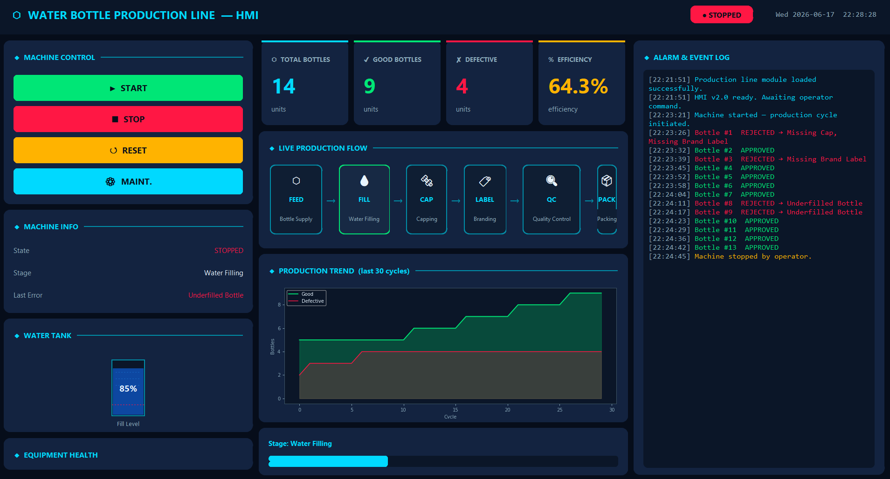
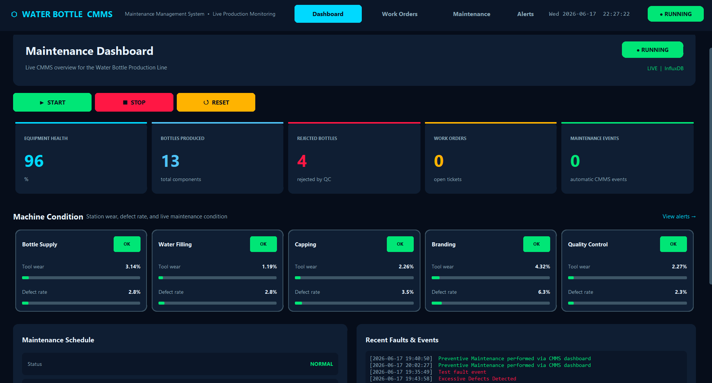
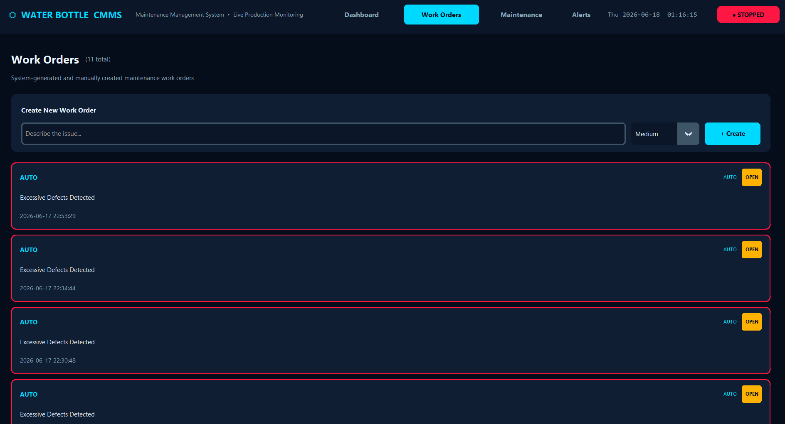
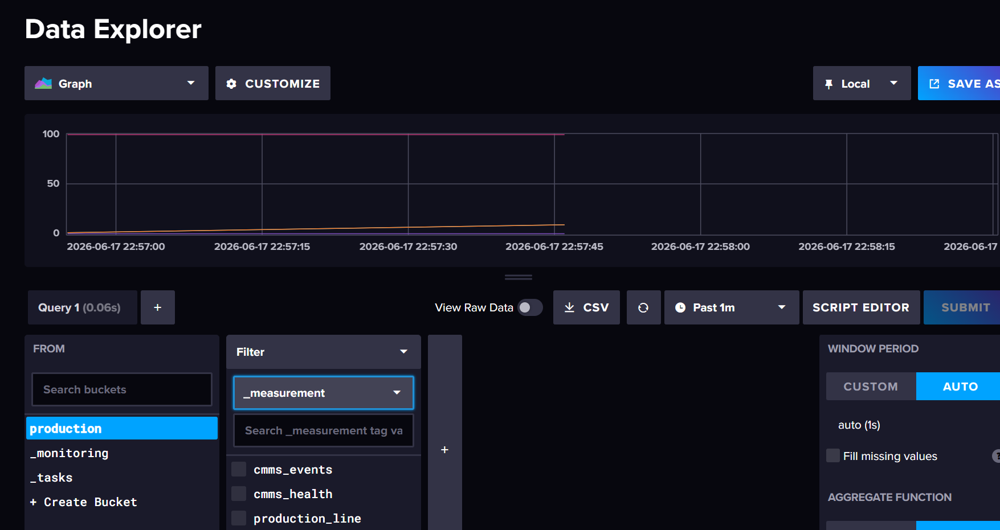
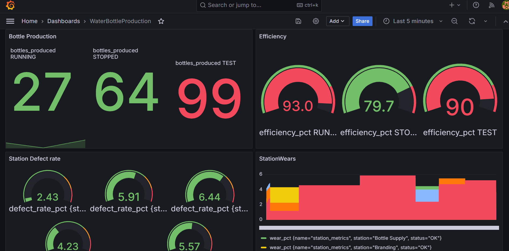

A simulated industrial production line built in Python — featuring a full SCADA HMI, real-time InfluxDB telemetry, Grafana dashboards, multi-threaded architecture, and Docker containerization. Designed to mirror real Industry 4.0 manufacturing environments.
The production line simulates the complete lifecycle of a water bottle across six manufacturing stages, from raw bottle supply through water filling, capping, branding, quality control, and final packaging.
The system continuously monitors production performance, equipment health, water tank levels, maintenance schedules, and defective products — surfacing all data through an interactive SCADA-style dashboard built entirely in Python.
Raw PET bottles fed into the line from storage
500mL purified water dispensed per bottle
Automated torque-controlled cap placement
Label application with orientation detection
Vision-simulated inspection, defect rejection
Batch grouping and palletization output
Industrial production systems require reliable, low-latency communication between machines, human operators, and monitoring platforms. The challenge was to build a software architecture that faithfully simulates real factory operations while maintaining UI responsiveness, data integrity, and real-time visibility — entirely in Python.
Running production logic on the same thread as the GUI would cause the interface to freeze. Storing metrics in a flat file wouldn't support time-series analytics. A single-process deployment would fail to mirror the multi-service nature of real industrial stacks.
The system follows a layered architecture inspired by real industrial control systems — each layer with a distinct responsibility and clean interface to the ones above and below.
Every component has a single job. Here's how they connect — from the entry point down to the database and back.
launcher.py ← entry point, starts everything │ ├── hmi.py ← HMI window (operator controls production) │ ├── production_line.py ← the machine logic │ │ ├── bottle.py ← a single bottle object │ │ ├── quality_control.py ← inspects each bottle │ │ ├── cmms.py ← tracks health, faults, work orders │ │ └── database/influx_client.py ← writes to InfluxDB │ └── cmms_dashboard.py ← CMMS window (reads from InfluxDB) └── database/influx_client.py ← reads from InfluxDB
launcher.pyIt opens two separate windows using subprocess:
hmi.py — the operator panelcmms_dashboard.py — the monitoring dashboardThey are two separate Python processes. InfluxDB is the bridge between them.
hmi.py) controls everythingWhen you press START, this happens every second:
process_bottle() moves each bottle through 5 stages one step at a time:
bottle.has_bottle = True
bottle.filled = True
bottle.capped = True
bottle.branded = True
QualityControl.inspect(bottle) — checks all 4 flags
At Quality Control, if any flag is False, the bottle is marked defective with a reason like "Missing Cap".
good_bottles += 1defective_bottles += 1cmms.record_defect() — equipment health drops by 1 pointcmms.report_fault() — creates a work order, logs the fault, stops the machineupdate_ui() runs on a 2-second timer. It calls InfluxReader which queries InfluxDB:
production_line + cmms_health + cmms_eventsmachine_stateThe CMMS also pushes station metrics (simulated wear per station) back to InfluxDB so Grafana can visualise them.
cmms.py) tracks machine healthThe CMMS class is owned by ProductionLine inside the HMI process. It tracks:
When you press MAINT. in the HMI: perform_maintenance() resets health to 100, clears faults, schedules next maintenance in 30 days, and logs a maintenance event to InfluxDB.
Grafana reads the same measurements the HMI writes. Point Grafana at localhost:8086, org SRH, bucket production, and query any of:
The HMI was built with CustomTkinter to closely resemble modern industrial control panels. Operators can start and stop production, monitor equipment health in real time, acknowledge alarms, inspect per-stage statistics, and manage maintenance work orders — all from a single window.

HMI Dashboard Screenshot
Add your file at: screenshots/hmi-main.png
Main SCADA Dashboard — production KPIs, stage status, water tank, and live chart
Each manufacturing stage shown in real time — colour-coded by status (normal / warning / fault).
Motor temperature, vibration index, and health score updated every second for all machines.
Visual tank gauge with low-level alarm threshold and automatic refill trigger.
Timestamped alarms with severity levels, acknowledgement workflow, and persistent history.
Matplotlib charts embedded in the UI, refreshed every cycle using animation threads.
CMMS work orders, service schedules, and equipment status all accessible within the HMI.
The CMMS module manages all maintenance activities for production equipment — from scheduled preventive maintenance triggered by run-hour thresholds to reactive work orders raised automatically when equipment health drops below defined limits. Every work order is tracked through a full lifecycle: open → assigned → in-progress → completed.

CMMS Screenshot
CMMS module — work order management, equipment health scores, and maintenance scheduling

CMMS Work Order Detail Screenshot
Work order detail view — assigned technician, parts used, completion notes
CMMS module — work order management, equipment health scores, and maintenance scheduling
Time- and run-hour-based service triggers with auto-generated work orders before failures occur.
Reactive work orders raised automatically when health scores fall below thresholds.
Full state machine: Open → Assigned → In Progress → Completed → Archived with timestamps.
Each machine registered with asset ID, install date, last service, and runtime hours.
Production metrics are written to InfluxDB every production cycle using the Python influxdb-client library. Measurements are tagged by equipment ID, production stage, and shift — making it easy to filter and aggregate data in Grafana for shift reports, equipment trending, and OEE analysis.

InfluxDB Screenshot
InfluxDB 2.7 — real-time metric ingestion via Python influxdb-client

Grafana Dashboard Screenshot
Grafana dashboard — multi-panel analytics fed from InfluxDB with auto-refresh
Running production logic on the UI thread would freeze the interface. The architecture separates concerns across threads connected by a queue.Queue — the standard Python pattern for safe inter-thread communication without shared memory.
after())The production loop runs in a threading.Thread daemon — the interface stays smooth at all times.
A threading.Lock protects shared production state; the queue delivers events without race conditions.
A threading.Event signals the worker to finish its current cycle and exit gracefully on stop.
The monitoring infrastructure — InfluxDB and Grafana — is containerized via Docker Compose. Running docker compose up -d launches both services with pre-configured credentials, ports, persistent volumes, and an auto-provisioned Grafana data source pointing at InfluxDB.
Identical environment on any machine with Docker installed — no manual setup.
Named volumes retain InfluxDB metrics and Grafana dashboards across container restarts.
Grafana data source and initial dashboards provisioned automatically on first start.
Services communicate over a dedicated bridge network — not exposed unless explicitly mapped.
This project demonstrates how modern software engineering techniques — multithreading, containerization, time-series analytics, and event-driven design — can be applied directly to industrial automation challenges. Every architectural decision was made to mirror patterns used in real production environments, from the separation of UI and worker threads to the use of InfluxDB for high-frequency metric ingestion.
The system serves as a practical foundation for future extensions: OPC-UA integration, machine learning–based predictive maintenance, edge computing deployment, or a web-based HMI replacing the desktop client.